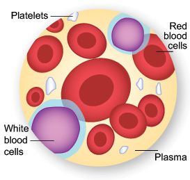

Blood is made mostly of plasma, but 3 main types of blood cells circulate with the plasma:
- Platelets help the blood to clot. Clotting stops the blood from flowing out of the body when a vein or artery is broken. Platelets are also called thrombocytes.
- Red blood cells carry oxygen. Of the 3 types, red blood cells are the most plentiful. In fact, a healthy adult has about 35 trillion of them. The body creates these cells at a rate of about 2.4 million a second, and they each have a life span of about 120 days. Red blood cells are also called erythrocytes.
- White blood cells ward off infection. These cells, which come in many shapes and sizes, are vital to the immune system. When the body is fighting off infection, it makes them in ever-increasing numbers. Still, compared to the number of red blood cells in the body, the number of white blood cells is low. Most healthy adults have about 700 times as many red blood cells as white ones. White blood cells are also called leukocytes.
Blood also contains hormones, fats, carbohydrates, proteins, and gases.
